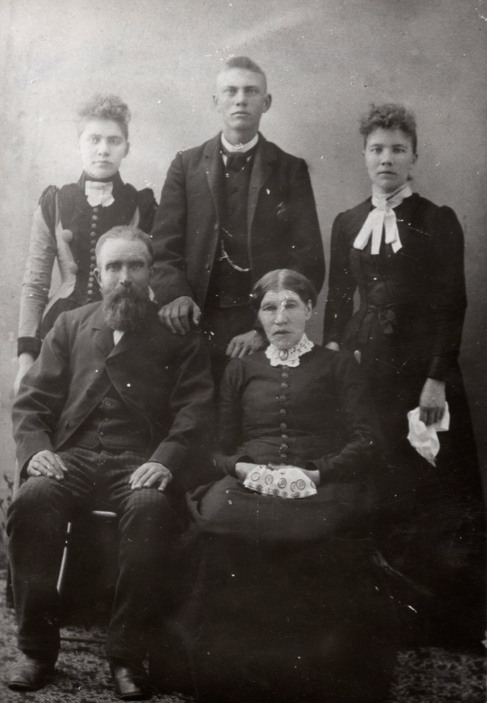
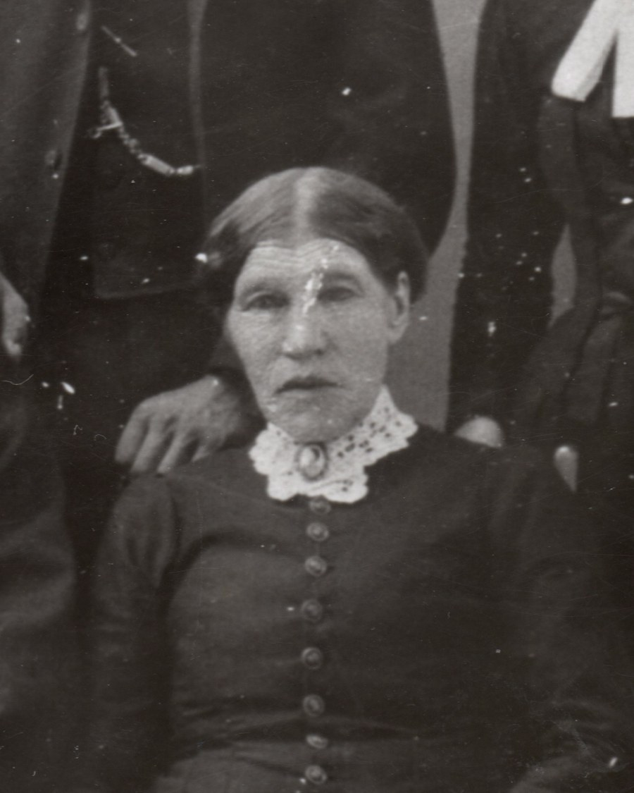
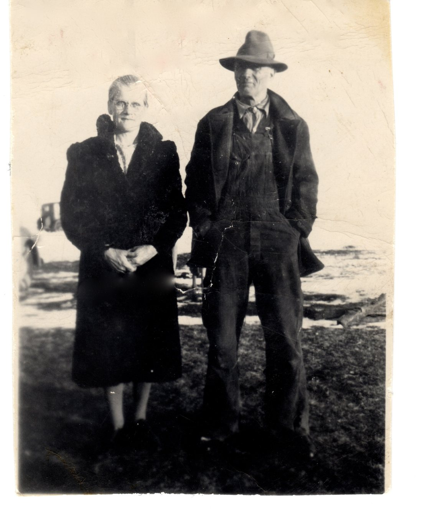
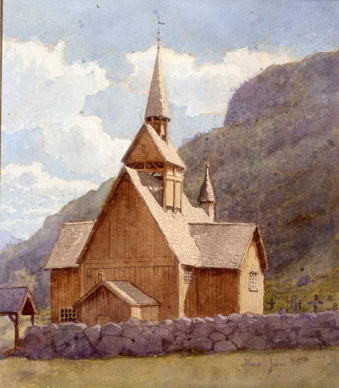
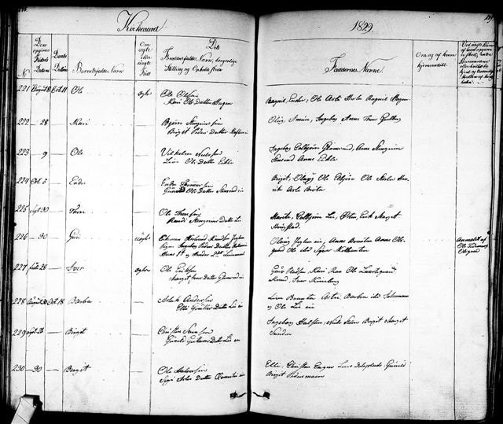

The face above Skriu
A steep face 350 m north of the yard. It is about 80 m high and as steep as 48°.
For: the farm under it is called Skriu, a Norwegian word for scree. Scree comes off a rock face.
Against: it stands over Skriu, not over Berget.

The Berget family from 1590 to today.
Thirteen fathers and sons. A solid line means a record backs that generation. A dashed line means it rests only on Dad's Ancestry tree.
Nes to North Dakota, one stop at a time. Ole, Gunhild and Christ took fifteen days from Christiania to Quebec in 1880. Use the buttons or the arrow keys.
Travelling in 1880Following in May 1881
The Kristiania police register for August 1880. Choose what to look at and the page moves to it.
The only photograph of anyone born in Nes. Move over a face to see who it is. Select one to open that person.

Dad's tree titles this “Ole and Betsy Berg family.” So the seated couple are Ole and Birgit, about ten years after they left Norway.
The three standing are probably their children Christ, Nellie and Betsy. Nellie is the Gunhild of the 1880 ledger. Nobody has confirmed which daughter is which.





All four of Dad's grandparents were born in Norway, and all four ended up at Turtle Lake. The Berget line is one of them.



North of Turtle Lake, North Dakota. Christ and Margith were there by 1910, and Ronald farmed it until 1971. Pick up a print to see it larger.
Tiny tales from the tree.
Where the Berget name comes from.
 BergAmun Levorsen
BergAmun LevorsenOn 1 February 1801 the census taker in Nes wrote Berg beside a farm and listed everyone living on it. Near the bottom is entry 276: Amun Levorsen, 50, husmann, with his wife Brynil.
The spelling Berget appears 38 years later, in the church book entry for Ole's birth in 1839.
Until the late 1800s most rural Norwegians had no family name. A man had a first name, his father's name with -sen on the end, and the name of the farm he lived on. Ole Amundsen Berget meant Ole, son of Amund, who lives at Berget.
The farm part worked like an address. If you moved, it changed. Norway only made fixed family names compulsory in the 1920s.
His marriage entry in Nes church. No Berg anywhere on it.
The census. He is a husmann at Berg, a cottager on a farm someone else runs. This is the only record we hold that puts the family at a place called Berg.
The baptism of his son Amund. If the address rule held, people would have called him after Høvde or Engen at this point, not Berg.
The Nes church book, entry 39. This is the earliest record we hold with the spelling Berget. A witness on the same entry appears to be a Kari Berget. Both are our reading of the handwriting.
The census. Ole, 26, owns it. It is holding 130c in the land register. Its neighbours in the list are Lie, Braaten and Bjørnebraaten. A second small holding next door is also called Berget.
The police emigrant ledger. This is the earliest record we hold where Berget is written as part of his name.
The family database has Nellie and Amund as Berg, and the family portrait came down labelled “Berg family”. Christ kept Berget, and it has been Berget since.

Background: Nesbyen and the hills above it, 1910
The old stave church at Nes in Hallingdal. The family's oldest records from Nes were written for events inside it. It was pulled down in 1864.

See the painting at Hallingdal Museum on Google Arts & Culture
Hans Gude was born in Christiania in 1825 and died in Berlin in 1903. He became one of Norway's best-known landscape painters. Three years after this watercolour, he and Adolph Tidemand painted Bridal Procession on the Hardangerfjord.
He was in Nes because of his father. Ove Gude was the district judge there from 1843 to 1852, and Hans came often. In June 1845 he was 20 and a student in Düsseldorf. The watercolour is 19 by 25 cm, smaller than a sheet of printer paper.
He came back in 1850 and measured the building. The architect Georg Bull measured it again in 1855. Those two sets of drawings are why so much is known about a church that no longer exists.
The watercolour was given to G. Tandberg, who founded Hallingdal Museum in Nesbyen. It is still there.
Three family events are recorded in the Nes church book while the stave church stood: a wedding in 1788, a baptism in 1811 and Ole's birth entry in 1839. The other births in Nes in those years have no entry we have read yet. Baptisms here are likely, and they are marked that way.
The church stood for about 590 years · orange: 1788 to 1864, the family's records here · white mark: Gude's painting
A sign at the site dates it to the 1200s. Burned foundations under it show at least one earlier church stood on the same spot.
The church began as one long room. The additions of the later 1700s gave it the shape in the painting.
RecordThe marriage entry in the church book. It is the earliest family event we can place in this building.
LikelyHe is 13 at Berg in the 1801 census. We do not hold his baptism entry.
RecordThe baptism entry in the church book. His parents were living at the Høvde cottage.
LikelyOle's future wife. Dad's tree has an 1829 register page filed as her birth record. We have not picked out her line on it yet.
RecordThe emigrant. Entry 39 in the Nes church book gives his parents as Amund Halvorsen Berget and Birgit Olsdatter. The entry is pictured below.
Ole is five. His father Amund is 34.
The stave church had become too small and was in poor repair. The font and the altarpiece were carried over to the new building.
Two years after the new church opened.
LikelyAll four were born after the old church was gone. They were most likely baptised in the new one, at the old font.


Generations 1 to 5 farmed Kvie in Flå, about 30 km down the valley. Flå had its own stave church, pulled down in 1859. Their baptisms were more likely there than here.
We have not checked which building each entry means. The Nes church book may also cover the smaller churches in the parish. The 1788 and 1811 entries need a second look for that.
We do not know where Ole and Birgit married. Their first child was born in December 1865. If the wedding was before 1862, it was in the stave church.
Sources: Hallingdal Museum, through Google Arts & Culture, for the painting, its date, size and history. The Norwegian Wikipedia article Nes stavkirke (Hallingdal) for the building, the measurements, the 1965 excavation and what survives. Lokalhistoriewiki for the date of about 1275 and for Flå. Hallingdal Reiseliv, through Visit Norway, for Ove Gude's years in Nes and the 1862 church. Family dates are from the family database.
Berget means the rock. This is the real ground around the farm, built from Norway's terrain survey. Somewhere in it is the rock the family is named for.
Drag to turn · pinch, scroll or use the buttons to zoom · heights are true to scale · on the survey map, dark lines every 50 m and every 10 m near the farm
A steep face 350 m north of the yard. It is about 80 m high and as steep as 48°.
For: the farm under it is called Skriu, a Norwegian word for scree. Scree comes off a rock face.
Against: it stands over Skriu, not over Berget.
The slope behind the farm ends in a rounded top at 677 m. It is 400 m east of the yard and 170 m above it.
For: it is straight uphill from the door.
Against: it has no name on the map.
The only named height nearby, 700 m to the south-west. Its map point is at 436 m, lower than the yard.
For: someone thought it worth a name.
Against: it already has that name, and it is nearer the Storeli farms.
The name may describe the farm's own ground: a house built on bare rock. The slope near the farm point is as steep as 30°.
For: it is the simplest reading of the name.
Against: the model cannot show bare rock. Someone has to stand there.
The farm history. Terje Østro's Gards- og Slektshistorie for Nes i Hallingdal has a volume for the Berg and Lie quarter. Its list of farms includes Berget. It should say who lived there and what the name refers to.
The land register. The 1865 census calls the family's farm holding 130c. No record yet ties that number to the Berget on today's map. The witnesses' names are the only link so far.
A visit. Stand in the yard, look uphill, and ask the neighbours what they call it.
Terrain: the Norwegian Mapping Authority's elevation survey, read from the open Terrain Tiles set (Kartverket, CC BY 4.0), with spot heights checked against Kartverket's elevation service. Satellite picture: Sentinel-2 cloudless 2021 by EOX IT Services GmbH, s2maps.eu (contains modified Copernicus Sentinel data 2021, CC BY-NC-SA 4.0); it shows the land today, not in 1839. Place names and positions: Kartverket's place-name register. The stave church position is 500 m north-west of today's church, placed by us. The straight line to the church is not a route. The reading of the 1839 entry and of the name Skriu is ours.
Rooms with the lights off. Each is a question someone in the family could close.